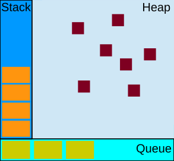

浏览器
浏览器是多进程（CPU 资源分配的最小单位）的，新开一个 Tab 页其实就是创建了一个浏览器渲染进程（记得很早之前，Firefox 是多个 Tab 共用一个进程，导致一个页面的假死会使整个浏览器崩掉）；一个进程中包含了多个线程（CPU 资源调度的最小单位），比如渲染线程、JS 线程、HTTP 请求线程等。当你发起一个请求时，其实就是创建了一个请求线程，当请求结束后，该线程可能就会被销毁。一个浏览器渲染进程通常由以下常驻线程组成：
- GUI 渲染线程：
- 负责页面的渲染，解析 HTML 构建 DOM、解析 CSS 构建 CSSOM、构建 render 树，触发布局和绘制等；
- 与 JS 引擎线程互斥，当执行 JS 时，GUI 渲染会被挂起。
- HTTP 请求线程：
- 负责执行异步请求的线程，执行代码时，遇到异步请求，会交给该线程处理；
- 当监听到状态码变更，事件触发线程会将异步回调加入到任务队列。
- JS 引擎线程：
- 负责 JS 代码的解析和执行，每个 Tab 只有一个 JS 线程在运行；
- JS 代码的执行会阻塞页面的渲染；
- 空闲的时候，会轮询任务队列。
- 定时触发器线程：
- 负责执行异步定时器（setTimeout、setInterval）的线程；
- 当计时完毕后，回调会被加入到任务队列，等待被执行。
- 事件触发线程：负责任务队列的维护和事件循环的控制。
事件驱动
所谓的事件驱动，就是将一切抽象为事件。I/O 操作完成是一个事件，用户点击是一个事件，一个图片加载完成是一个事件；当这些事件发生时对应的代码逻辑就会进入任务队列，等待 JS 线程读取。
事件驱动的实现过程主要靠“事件循环”完成；JS 线程不停的从任务队列里读取事件。如果事件有关联的处理函数，就执行函数。

JS 线程运行时，产生堆 Heap 和栈 Stack，栈中的代码调用各种接口，在“任务队列”中加入各种事件；只要栈中的代码执行完毕，JS 线程就会去读取“任务队列”，依次执行那些事件所对应的回调函数。
任务队列
JS 运行时包含了多个待处理任务的队列（宏任务队列 TaskQueue、微任务队列 JobQueue 等）；每一个任务都关联着一个用以处理这个任务的函数。
- 宏任务队列：ScriptCode、MessageChannel、setTimeout、setInterval、setImmediate、I/O、UIRender、requestAnimationFrame、requestIdleCallback 等；
- 微任务队列：Promise、MutationObserver、process.nextTick 等。
你可以将这些方法看作是任务分发装置，他们会将要执行的代码或回调函数分发给不同的任务队列。
在事件循环期间的某个时刻，从最先进入队列的消息开始处理队列中的消息；这个消息会被移出队列，并作为输入参数调用与之关联的函数；函数的处理会一直进行到执行栈再次为空为止；然后事件循环将会从任务队列中提取下一个任务（如果还有的话）。
事件循环机制
为了协调事件、用户交互、脚本、UI 渲染和网络处理等行为，防止 JS 线程阻塞，JS 引入事件循环机制来管理协调这些事件，实现异步：
- 从 ScriptCode 开始执行代码（宏任务）；
- 全局上下文进入调用栈；
- 执行微任务队列里所有的任务；
- 判断页面是否需要更新渲染（不一定存在于每轮事件循环，根据屏幕刷新率、页面性能、页面是否在后台运行来共同决定）；
- 如果需要执行页面渲染，则触发 resize、scroll、进行 CSS 动画、执行 requestAnimationFrame、执行 IntersectionObserver、渲染屏幕、执行 requestIdleCallback；
- 宏任务队列里取出一个宏任务执行；
- 一旦调用栈中的任务执行完毕，系统就会读取任务队列，将任务压入调用栈执行；
- JS 线程不断重复上面的步骤（执行一个宏任务->执行微任务队列里的所有任务->渲染工作（可能不需要）->执行下一个宏任务->…）。
注意
- process.nextTick 队列中的任务会比 Promise 队列中的任务先入栈，Promise 队列中的任务会比 MutationObserver 队列中的任务先入栈（尽管他们都是微任务）；
- MessageChannel 队列中的任务会比 setInterval/setTimeout 队列中的任务先入栈（尽管他们都是宏任务）；
- setInterval/setTimeout 队列中的任务会比 setImmediate 队列中的任务先入栈（尽管他们都是宏任务）；
- 浏览器会尽可能的保持帧率稳定，如果页面性能无法维持 60fps，那么浏览器就会选择 30fps 的更新速率，而不是偶尔丢帧；
- 如果更新渲染不会带来视觉上的改变或者帧动画队列为空，浏览器会跳过当前帧的更新；
- 如果浏览器上下文不可见，那么页面会降低到 4fps 左右甚至更低。